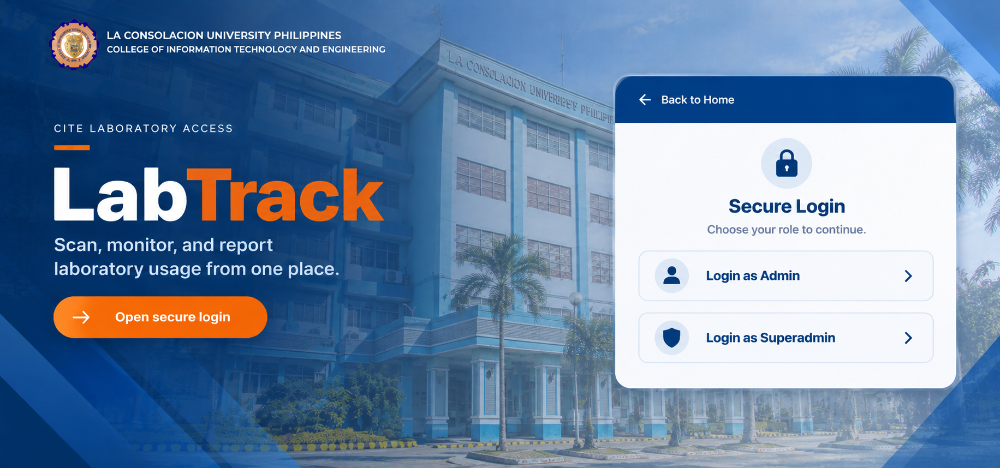
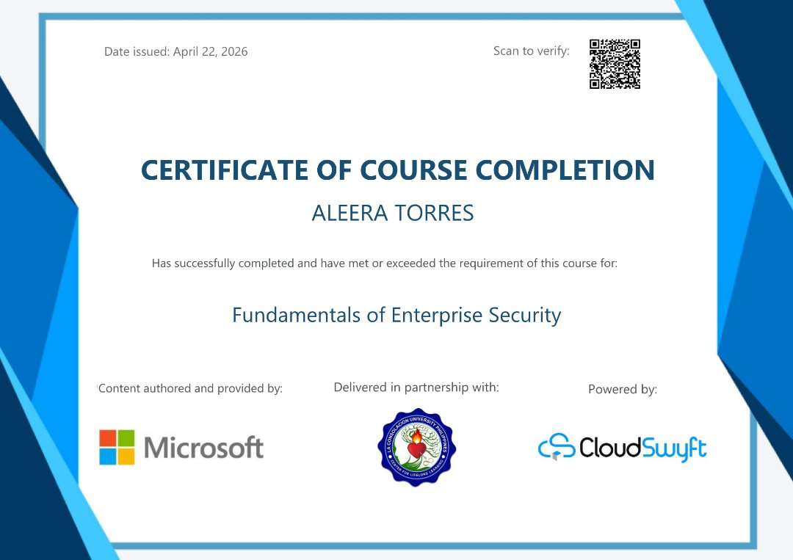
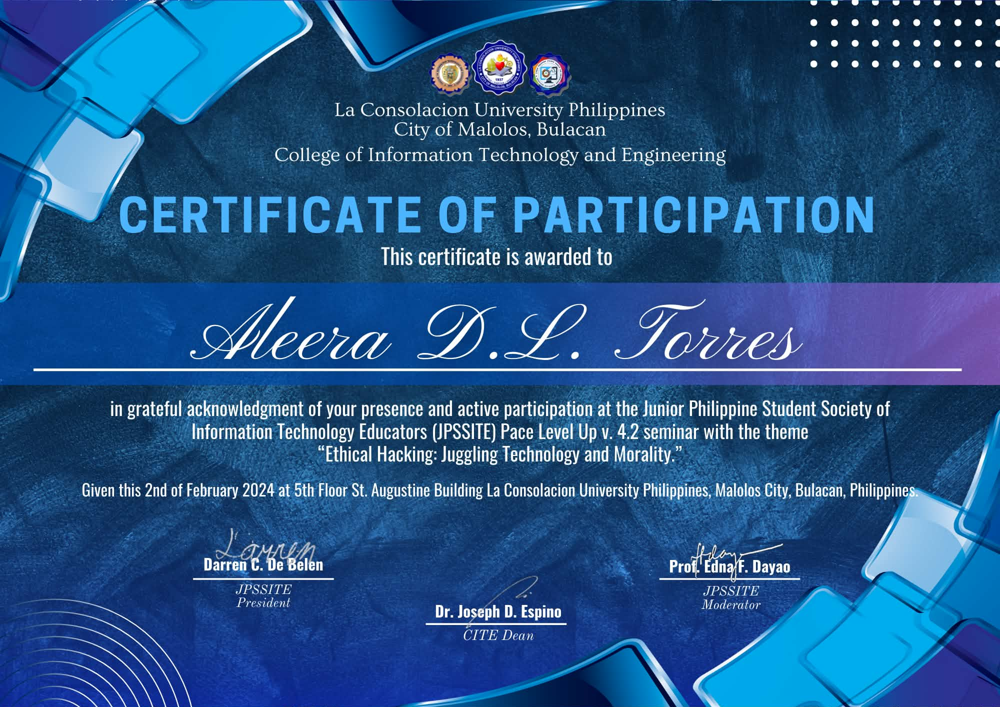
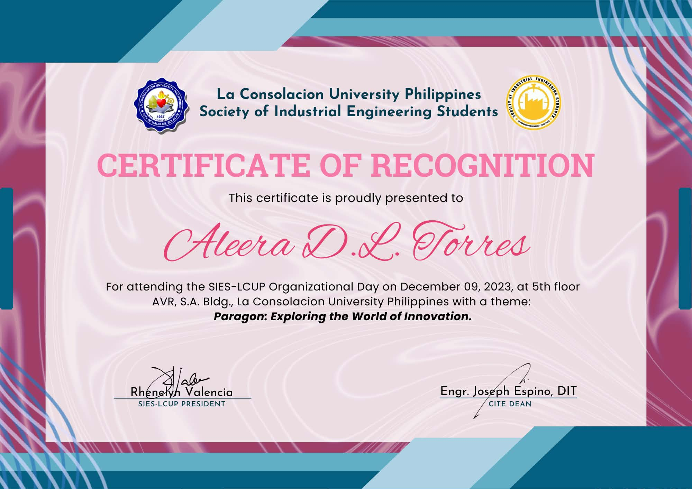

Web Development
Building laboratory dashboards, database-backed features, RFID verification, and usage reports in LabTrack.
HTMLCSSJavaScriptPHPMySQLBootstrapXAMPP
Applied in LabTrack
HTML/CSS certificate · Top 10%
HELLO, I'M
I develop practical, user-focused applications with a foundation in web technologies, Python, and databases. I’m seeking an opportunity to contribute my technical skills, solve meaningful problems, and grow with a professional team.
A foundation in technology, a practical approach, and a commitment to continuous improvement.
I’m Aleera De Leon Torres, an Information Technology student at La Consolacion University Philippines with hands-on experience in web development, Python programming, and database-driven applications. My technical foundation is supported by coursework and certificates in HTML/CSS, C#, enterprise security, Excel, and Access.
I approach development by breaking problems into manageable steps, organizing information clearly, and considering how people will use the result. I value readable code, careful testing, and constructive feedback. I’m looking for an entry-level role where I can contribute to a team, take on practical challenges, and continue developing my skills.
Skills developed through hands-on projects and courses in web development, programming, security, and data management.
Building laboratory dashboards, database-backed features, RFID verification, and usage reports in LabTrack.
Capturing image datasets, processing face images, training an LBPH model, and recognizing faces through a webcam.
Creating platformer levels, character movement, sprite animations, collisions, collectibles, and game menus.
Foundational C# programming knowledge developed through the Foundational C# with Microsoft course from freeCodeCamp and Microsoft.
Enterprise security fundamentals studied through Microsoft content on CloudSwyft, complementing my work on laboratory access and verification in LabTrack.
Spreadsheet and database skills supported by my Excel 2019 Associate and Access 2019 Expert course certificates, alongside MySQL database work in LabTrack.
Projects in web development, computer vision, game development, and Android apps.

A laboratory access and monitoring system with RFID student verification, computer session tracking, laboratory management, and usage reports.
A Python webcam application that captures a face dataset, trains an LBPH model, and labels detected faces as Aleera or Unknown using OpenCV.
Capture webcam images, train the face recognition model, then run the desktop app for live frontal and profile face detection. Requires a local Python environment and a webcam.
A two-level 2D platformer made in Godot, featuring an animated frog, collectible points, enemies, and a pause menu.
Choose a level, jump across platforms, collect items, and avoid enemies. Use A/D or the left/right arrows to move, W or the up arrow to jump, and Escape to pause. Runs locally in Godot.
A native Android app for recording income and expenses, setting monthly budgets, and reviewing balances and transaction history, with local SQLite storage.
Register and sign in, record transactions by category and payment method, set a monthly budget, and view your remaining budget in Philippine pesos. Filter history by income or expense, and edit or delete transactions. Runs on an Android device or emulator through Android Studio.
My course certifications and seminar experiences in technology, development, and innovation.

TestDome · August 8, 2026
View certificate
Microsoft content · CloudSwyft · April 22, 2026
View certificate
freeCodeCamp & Microsoft · October 9, 2025
View certificateCourse certificate · PDF document
View PDFCourse certificate · PDF document
View PDF
JPSSITE Pace Level Up v. 4.2 · February 2, 2024
View certificate
SIES-LCUP Organizational Day · December 9, 2023
View certificateJPSSITE Pace Level Up v. 4.1 · December 6, 2023
View certificateJPSSITE Pace Level Up v. 4.0 · October 12, 2023
View certificateI'm open to learning opportunities, collaborations, and conversations about technology. Feel free to reach out!
Send an Email